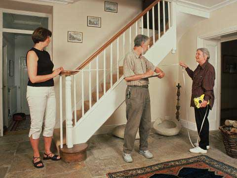
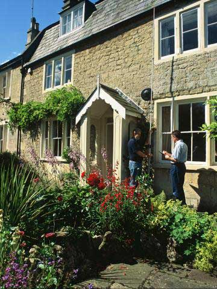
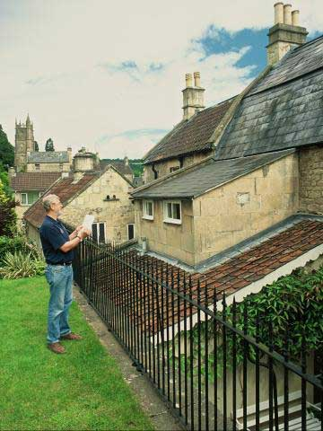
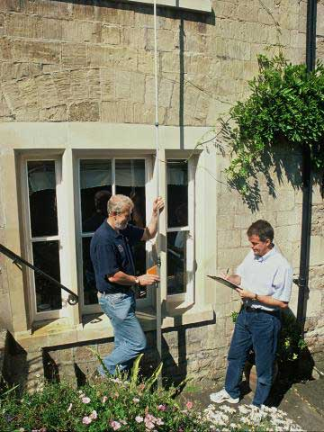
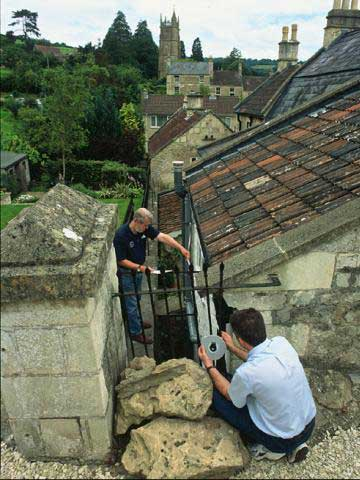
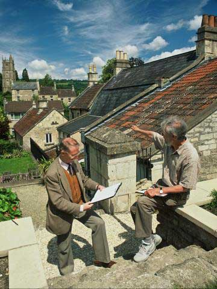

The Survey Team:
| Hedda Beese | Rob Mimmack |
| Wolfgang Beese | Ron Russell |
| Daniel Brown | Sheila Russell |
| Lynda Brown | Ray Shirvill |
| Mike Chapman | Connie Wright |
| Peter Davis | Kay Yeomans |
| Peter Davenport | Les Yeomans |
| Terry Hardy |
This project was conceived following two earlier village surveys
in the Bath area - at Newton St Loe and Stanton Prior - where local
people had worked with experts in the study of vernacular building to prepare
comprehensive surveys showing the development of historic buildings in the two
villages. Both projects had been supported by B&NES Council which had provided
both expertise and some funding to pay for the preparation of the survey drawings
and in the case of Newton St Loe for publication in booklet form. The surveys
followed a pattern used elsewhere in Somerset by teams led by John Dallimore.

Three of the Stanton Prior “surveyors” happen to live in Batheaston and felt that a village with such a rich heritage of buildings of historic interest, both listed and unlisted deserved to have a record made particularly as so many of these buildings had been substantially altered in recent years with the loss of many of their original features including window and door “furniture” roof coverings, fireplaces and kitchen fittings. However Batheaston is a large village making a comprehensive survey and research a daunting task.

The introduction of the Local Heritage Initiative (LHI), a Heritage Lottery funded scheme aimed at enabling local people to play an active role in the research and conservation of their local heritage provided the opportunity to take this idea forward. We decided to start with an initial phase of 50 buildings and to develop a website as our principal means of publishing the surveys and research findings. One of the first LHI grants in the South West was awarded to the projects with approximately £10,000 coming from the scheme to pay for the preparation of the scale drawings, equipment, publicity and publication and the development of the website. The project was also supported with small grants from Batheaston Parish Council and the Batheaston Society which took responsibility for managing the scheme. As a condition of the grant time committed by volunteers was recorded and used as “match funding” to the LHI grant.

A small but enthusiastic team of surveyors and researchers set out on a daunting schedule sometimes carrying out 2 surveys a week with enthusiastic co-operation from many local residents, proud of their historic homes and keen to learn more about the history of the buildings. A photographer from the Countryside Agency captured a number of images from the survey of a house in Northend and these were published on the LHI’s own website. They show members of the team at work with clipboards, measuring rods and tapes.

Once the individual surveys were complete the sketch drawings and measurements were sent to our professional draughtsman who produced scale drawings and a historical analysis of the sequential development of each building incorporating research and expert knowledge from members of the survey team. Photographs were taken by a member of the team showing important features of each of the buildings.

Completion of the first 53 buildings represents the first stage of what it is hoped will continue as a record of the buildings which still survive from those recorded on the 1840 Tithe Map of the village. Many more houses, some of them high status dwellings, others humble cottages and outbuildings remain to be surveyed and no doubt still hold information which will help with the development of a better understanding of how our village grew and changed over its long history. Anyone who would like to be involved in future research is urged to contact the Batheaston Society.

All images on this page copyright Countryside Agency/ David Ward